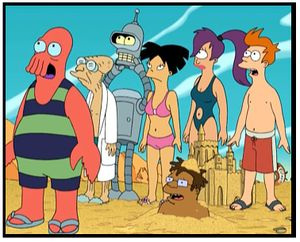
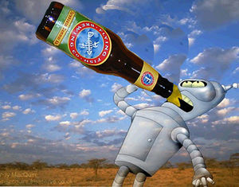
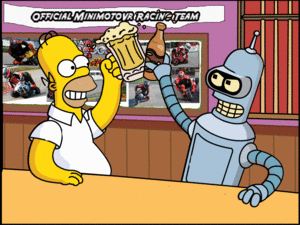

Futurama
 De: La Frikipedia, la enciclopedia extremadamente seria.
De: La Frikipedia, la enciclopedia extremadamente seria.
Futurama es una de las tantas series creadas por el señor Matt Groening, al igual que en Los Simpsons, el tipo trata de demostrar como es la vida en otros planetas, en este caso lo hace juntando a cuanto personajes y tres colados que se le cruzara por la mente y reuniendolos en un lugar.
 Junto a Bender, se encuentra el resto de delicuntes de la serie.
Origenes
En sus principios, futurama empezo siendo un reality show de la empresa "Gran Hermano" y le iba realmente bien, hasta que en el año 2000, una plaga de ratas en el estudio hizo que todos los participantes se vayan a la mierda a sus casas y el estudio quede vacio.
Fue justo en ese momento, cuando Matt paseaba por esas zonas despues de una noche de Alcohol, sexo, drogas, robos y asesinatos fiesta cuando se le ocurrio ingresar a ese enorme estudio y por medio del efecto de el Alcohol, el sexo, las drogas, los robos y los asesinatos de su gran imaginacion que en menos de 10 minutos invento una gran cantidad de personajes, que al igual de los de gran hermano, serian todos con retardo mental absoluto un ligero retraso que podrian encajar perfectamente en ese entorno y, que al igual de todas las estupideces que invento, le agradaria a los televidentes.
Personajes
- Philip J. Fry: Hombre de pelo rojo (no, que no es supersónico) que gracias a la silla que echo hacia atras y apoyo en las dos patas traseras cayo en
una nevera un congelador, en el cual permaneció un milenio congelado (1000 años, para los ignorantes) . Al despertar el pobre se dio cuenta de que todos los hippies y fascistas que lo rodeaban habian muerto y que estaba en un planeta que no conocia (con el pasar del tiempo se daría cuenta que era la tierra) y que se encontraba rodeado de criaturas que eran realmente mas raras que su novia y muchisimo mas malas que su suegra.
Generalmente le atraen las mujeres que tienen menos ojos, manos o neuronas que el(Lo ultimo es imposible),pero Leela es une excepción siempre anda curioseando sobre su pasado.
- Bender: Es un robot borracho que posee la misma tecnologia que una maquina de escribir. Es realmente irritante y siempre esta tratando de destruir el mundo
y dar por culo.
Trabajaba doblando cosas como ganchos para ropa, barras de las rejas de las casas para robarlas, cosas asi, pero decidio que era demasiado dificil y se dedicó a robar bolsos de ancianas para drogarse con las pastillas que llevaban dentro (profesion actual)
Al tener tres años, fue creado por una empresa que producia zapatos y comprado por un cientifico, que lo unio con partes de latas, madera y alcohol formando asi este ser que realmente es un ejemplo de vida.
Fue hecho en mexico, lo que explica su tendencia a tomar cerveza y el gran tamaño de su antena, asi como la mala calidad de sus componentes mecanicos ya que siempre se le caen los brazos, las piernas o las dos.
Hay algunos rumores que dicen que el es una version futura de Philip J. Fry solo que en este caso perdio las pocas neuronas que le quedaban.
 Bender realizando lo que mejor sabe hacer... mirar hacia el cielo.
- Profesor Hubert Farnsworth: Al igual que todos en el planeta, es un viejo borracho de unos escasos 821212 años de edad es el nieto de Fry, de ahi su
inaptitud grandeza como inventor.
Durante su vida fue el creador de innumerables inventos como la guillotina, la telefonia celular y la television. Cuando tenia 3 años, se le diagnostico una superdotacion cerebral, lo que provoco que el pequeño no cursara la escuela y que envejeciera a la velocidad de la luz (Apagada).
Cuando tenia mas o menos unos 300 años se enroló con "mamá", una anciana milenaria mas vieja que un fosil y arrugada como una ciruela pasa, despues de robar algo del viagra secreto de los nara (pildoras del soldado) logró que el soldadito le desfilara el tiempo suficiente para echarle unos polvos a mamá, de ahi salieron 3 niños, uno idiota, otro mongolico, todos ellos mas feos que mandar a la abuela a por droga, actualmente son sus esclavos asistentes y le tienen que cumplir cuando a la anciana se le alborota la hormona (efecto residual del viagra secreto)
Le gusta el whisky, el trafico de drogas y la manzana acaramelada. Debido a una explosion nuclear quedo calvo, sin pene y con unos lentes pegados a su cara. Esta en un estado que si queda desnudo provoca la muerte
- Leela: Mujer
que debido a la exsesiva cantidad de maquillaje que utilizo perdio un ojo mutante,la menos mutada segun propias palabras de la serie.
Al tener apenas algunos dias, fue secuestrada de sus padres por el profesor farnsworth y como el anciano no veia muy bien la dejo caer en una alcantarilla abierta lo cual curiosamente la hizo crecer rapidamente y tomar el cuerpo de una mujer adulta, cosa que decepcionó al profesor ya que era pedofílico.
Domina las artes marciales pero no tiene la voluntad del guerrero.
- Amy: Inmigrante ilegal de oriente, llego al planeta metida en una caja de "Hello Kitty" hasta que fue descubierta por unos extraterrestres en la frontera del planeta y, como las carceles estaban llenas, la enviaro con el Profesor Hubert Farnsworth para que sea su ama de llaves y esclava sexual.
Su vida siempre esta pendiendo de un hilo ya que debido a su incotrolable estupidez mental, provoca catastrofes naturales de proporciones inimaginables que generalmente matan a sus amigos.
Puta a mas no poder siempre busca echarle un buen polvo a sus compañeros de equipo, si bien con el unico que se entiende es con fry, esto debido a que ambos tienen la misma cantidad de neuronas (nuestros expertos calculan que este numero tiende a -infinito pero aun no logran determinarlo) y entienden las estupideces del otro
- Hermes: Es el nieto de Bob Marley. Fanatico del limbo y adicto a todo lo producido en Colombia, es un contador rastafari que siempre lleva porros al trabajo y se lia otros mas con los documentos importantes que llegan hasta su escritorio, es adicto al porro, al ron con cola (si, exactamente a lo que piensan) y a la cocaina, de manera que siempre anda "feliz" y con ganas de bailar limbo, en lo cual es muy bueno gracias a que los años de adiccion le ablandaron los huesos haciendole mas facil doblarlos.
Tiene una esposa que trabaja como furcia para mantenerle el vicio y un hijo que le roba las bachas para liarse el sus porros, Hermes siempre trata de castigarlo pero tiene el lapso de memoria de un pez dorado y a los 3 segundos se olvida de por que debe castigarlo, lo unico que recuerda bien son tres cosas: liarse los porros, preparar la bebida y bailar limbo
- Dr. Zoidberg: Uno de los experimentos fallidos del profesor cuando quizo cruzar una langosta con un cangrejo mutante, zoidberg es una especie de langosta-cangrejo humanoide que el profesor usa como bote de basura, esto debido a que se come cualquier cosa medianamente nutritiva (papeles viejos, condones usados, residuos radioactivos, uñas de los pies, etc.) lo cual le ha llevado a desarrollar una increible resistencia a cualquier substancia toxica, lo cual explica por que bender no lo ha podido envenenar
Compró un titulo falso de medicina en mexico y puso su consultorio en la casa del profesor, no sabe distinguir un calculo en el riñon de un agujero en el suelo pero como el profesor no ve ni puta madre de lo que hace aun no lo despide, alguna vez intentaron usarlo de esclavo sexual pero la peste que despide impidio que se le acercaran lo suficiente
- Scrofy: Es el personaje más popular de la serie, pese a sus escasas apariciones. Es el conserje pervertido del lugar, se pasa el día encerrado en la sala de calderas desde donde espía los baños y los vestidores de mujeres, y a veces los de hombres (en el futuro no se sabe!), su principal pasatiempo es cascársela viendo a leela y a ami haciendo el 69 porque labores de conserje no hace nada, en realidad es una rata que recibió demasiados líquidos radioactivos y muto hasta algo que parece mas o menos humano, es el unico al que no se ha cepillado ami, esto debido a que nunca sale.
Estudios recientes afirman que Scrofy es Reese (Malcolm el de enmedio) en el futuro, ya que es feliz con su simple empleo de conserje y disfruta de las revistas pornográficas y comer papas fritas. También se ha especulado que es el Impotente Hulk Hogan, luego de su futuro retiro en el año 2.979.
- Capitan Zap Brannigan: Bola de carne semi-humana que llego a ser capitan ofreciendole el culo a cuanto oficial mayor veia, tiene un numero de neuronas similar al de fry y siempre anda drogado con aspirinas y whisky, cuando tenia 5 años vio una pelicula porno estelarizada por sus padres y quedo tan traumado que el soldadito se le hizo chiquito y ya jamas le pudo desfilar, intento violar a leela pero cuando ya la tenia lista para el asunto no se le paró, dejandola muy insatisfecha, leela le dio una patada en los cojones tan fuerte que hasta hoy habla como afeminado, se dice que a raiz de eso los cojones se le subieron y ahora es una especie de mujer-hombre travestido, ya que su uniforme es de terciopelo y con faldita
- Kif: Es una mantis religiosa evolucionada que cayó en una cloaca y mutó hasta convertirse en una especie de moco viviente que cambia de color si se acojona, mas cobarde que un emo e igual de feo que uno, actualmente es el
esclavo sexual asistente personal de zap brannigan, haciendo todo lo que un buen asistente debe hacer: afeitarle la espalda, ponerle las medias, depilarle las piernas, sodomizarlo cada que a brannigan le da comezon en el culo, cosas de ese tipo.
Cuando se entero de que ami era una puta ninfomana fue corriendo a la casa del profesor para cepillarsela, y luego de hacer la reglamentaria fila de dos horas (joder que esas cosas llevan tiempo y ademas todos estan formados para cepillarsela) por fin se la pudo pasar por el arco del triunfo, ami vio su oportunidad de obtener su green card (porque era verde el bicho este) y se caso con el por la ciudadania, kif se cagaba del gusto por poder tener sexo no-homosexual (aunque no estamos muy seguros de que sea hombre) hasta que pasaron 6 meses y ami se divorcio de el sin perder la ciudadania y ademas quitandole la mitad de su dinero, despues de eso kif se pegó la borrachera de su vida (se bebio una cerveza y dos chupitos de tequila) y cuando despertó brannigan lo tenia amarrado y le estaba metiendo viagra hasta por las orejas para después aprovecharse de la situacion, nunca ha sido el mismo desde entonces
Cronologia de Futurama
Advertencia: Esto ha sido Robado tomado prestado de la Wikipedia
Amanecer de los tiempos — 1999
- Diecisiete años antes del Bang de Tamaño Medio (historiadores posteriores sobrestimarán su importancia): Aparece la raza de los Niblonianos.
- El Bang de Tamaño Medio: Se crea el Universo, así como el universo paralelo.
- Algunos milisegundos después del Bang de Tamaño Medio: Aparecen los malvados Cerebros gigantes y comienzan la guerra contra los Niblonianos que durará hasta el siglo XXXI.
- Hace 65,5 millones de años: Los Cerebros gigantes provocan las extinción de los dinosaurios terrestres.
- Hace 29.997.000 años: Nimbala proclamado emperador de Zubin 5.
- 1770 (circa): Minuteman Yancy Fry lucha contra los «rojos» (según el padre de Fry) en la Guerra de la Independencia de los Estados Unidos.
- 1947: Una tripulación de Planet Express que viaja en el tiempo provoca el incidente de Roswell. Philip J. Fry mata accidentalmente al hombre que suponía era su abuelo y tras consolar a la que sería su abuela la deja embarazada, convirtiéndose en su propio abuelo y siendo así incapaz de proyectar ondas cerebrales delta.
- 1948: Nace Yancy Fry, Senior (padre y simultáneamente hijo de Philip).
- 1971: Nace Yancy Fry, Júnior (hermano mayor de Philip).
- 1974: Philip J. Fry nace en el Brooklyn Pre-Med Junior Hospital.
- 1980: Philip J. Fry empieza a querer tener un robot como mejor amigo a esta edad.
- 1985: A la venta la banda sonora de The Breakfast Club.
- 1988: Philip J. Fry esconde de su hermano su trébol de 7 hojas de la suerte.
- 1989: Se estrena la serie de televisión Los Simpson.
- 1994 (circa): Fry no logra graduarse en el Coney Island Community College.
- 1996: Nace Seymour, el perro de Fry.
- 1997:
- Último fallo de suministro eléctrico en Applied Cryogenics.
- Fry encuentra Seymour en una calle de Nueva York tras un reparto de pizza a «Seymour Asses» («Di más culos») que resulta ser una llamada de broma.
- 1999:
- Philip J. Fry derrama una cerveza sobre una consola de control en la estación neoyorquina de la Fox WNYW, interrumpiendo la emisión de Abogada Soltera.
- La cuenta bancaria de Fry queda con un saldo de 93 centavos, que tras mil años de intereses alcanzarán los 4.300 millones de dólares.
- 31 de diciembre: Philip J. Fry realiza un reparto de pizza de broma a Applied Cryogenics, a nombre de «I.C. Wiener» («Veo un pringao, en castoyllano, pero arreglado como I.C. lacreyó en una de las traducciones para mantener el chiste»)
2000 — 2499
- Nace el sobrino de Fry, hijo de Yancy, llamado también Philip J. en honor a su tío y bisabuelo.
- Desaparece el Beisbol y aparece el Blernsball.
-
- Atlanta, Georgia se muda a la costa, pero tras sobredesarrollarse se hunde en el fondo del Océano Atlántico y permanece perdida hasta principios del siglo XXXI.
- Antes de finalizar el año:
- Hay un único universo paralelo hasta los sucesos del episodio La paracaja de Farnsworth.
- Se estrena la Película de Guardianes de la Bahia, la primer película filmada en cámara lenta; haciendo que Pamela Anderson gane un Oscar.

Al parecer,
Geoge realizo su sueño.
- 2001:
- Se estrena la película ¿Y dónde está el jurado? II: Problema en el Hubble protagonizada por Pauly Shore.
- Michelle, la ex-novia de Fry, abandona a su marido y familia y se congela durante 1.000 años, sin saber que Fry también ha sido congelado.
- 2002 Una barcaza llena con toda la basura de Nueva York comienza a vagar por los océanos de la Tierra durante 50 años ya que ningún país la acepta. Ni siquiera ese tan sucio... ya sabes a cuál me refiero.
- 2003: Lucy Liu es designada por la revista People la «Mujer Más Sexy del Año».
- 2004: Los Succionadores de Cerebros comienzan la construcción de la Infoesfera, un gran banco de datos dos veces más grande que tres bancos de datos normales juntos en el que pretenden recoger todo el conocimiento del universo.
- 2006: Britney Spears es coronada reina de algo.
- 2007: Se estrena la película Los ángeles de Charlie III: La leyenda del oro de Charlie.
- 2008: Para y Cae se convierte en la marca de cabina de suicidio favorita de Estados Unidos.
- 2011: Seymour muere frente al abandonado restaurante Panucci's Pizza tras esperar toda su vida a Fry. Queda presumiblemente fosilizado en dolomita poco después.
- 2012: Guerra del 2012, en la que Conan O'Brien pierde sus piernas.
- 2019: Se inicia el Proyecto Satán para crear el automóvil más malvado del mundo. El primer modelo de Calculón se contagia de licantropía automovilística.
- 2022: Philip J. Fry II se convierte en el primer hombre que pisa Marte.
- 2038: Se agotan las reservas petrolíferas de la Tierra.
- 2052: Los neoyorquinos se sirven de sus contactos con la Mafia para terminar con el problema de su barcaza de basura enviándola al espacio.
- 2056: Aparecen los primeros "Robots personalizados de famosos", robots que cumplen las satisfacciones amorosas de los humanos con forma de cualquier famoso, descentrándolos de cualquier otra actividad.
- 2063:
- Los políticos más simpáticos deciden lanzar de vez en cuando un enorme cubito de hielo al océano para combatir el calentamiento global.
- Lucy Liu es designada de nuevo por la revista People la «Mujer Más Sexy del Año».
- Años 2000 (muy probablemente después de 2063): Los cyborgs esclavizan a la humanidad.
- 2136:
- Los "Robots personalizados de famosos" distraen a toda la humanidad por completo, dejando a la Tierra vulnerable a cualquier ataque.
- El alienígena FXJKR se convierte en el 60º presidente de los Estados Unidos.
- 2158: Establecimiento de la Burocracia Central.
- 2200 (circa):
- Se extinguen los abetos.
- Un secuestrador comienza a mantener prisionera la cabeza de Lucy Liu.
- 2208: Los científicos incrementan la velocidad de la luz.
- Años 2200:
- Los Decapodianos (la raza del Dr. Zoidberg) establecen contacto con la Tierra.
- Los Decapodianos devoran anchoas hasta provocar su extinción.
- El reparto de Star Trek organizan algunos especiales de reunión musicales. Welshie se añade al reparto sustituyendo a Doohan, que no sabía cantar a la tirolesa.
- La Iglesia de Trek dispara su popularidad por todo el mundo. Alemania es renombrada «País del Episodio del Planeta Nazi» como resultado de ello. La popularidad de la Iglesia amenaza a los líderes mundiales, provocando las Guerras Star Trek y la prohibición de la Iglesia y la serie, siendo enviadas a Omega III las copias restantes.
- Una invasión alienígena arrasa la ciudad de Nueva York. Una civilización primitiva y medieval surge de nuevo, pero es de nuevo demolida por los alienígenas. En una fecha posterior indeterminada, las ruinas de la «Vieja» Nueva York son sepultadas y se crea sobre ellas una ciudad futurista: «Nueva Nueva York». Las ruinas de la Vieja Nueva York caen en un progresivo declive subterráneo, y muchas de las cloacas de la ciudad superior se construyen a través o cerca de ellas. Finalmente, los residuos radiactivos y las buenas heces tradicionales americanas transforman a los humanos moradores de las cloacas en una sub-raza de mutantes.
- 2220: extinción de la anchoa
- 2275: Se aprueba la Ley de Justicia Infernal, que estipula que cualquiera que derrote al Diablo Robot en una competición de violín ganará un violín de oro macizo y podrá abandonar el Infierno Robot. Los perdedores sólo obtendrán un violín de plata más pequeño, y el Diablo Robot podrá matarlos a su antojo.
- Años 2300: Desaparece American Express.
- 2354: Kwanzaabot empieza a repartir el tradicional regalo Kwanzaa: los libros ¿Qué diablos es la Kwanzaa?.
- 2443: El Segundo Advenimiento de Jesucristo provoca la destrucción de la mayoría de los videocassettes.
- 2475: Washington, D.C. se rededica al Washington de la serie Welcome Back, Kotter.
- Años 2400: Desaparecen las tarjetas VISA.
 Al parecer, Matt groening se ve reflejado en sus personajes.
2500 — 2999
- 2600 (circa): Chapek IX es colonizado por separatistas robot radicales. Los Ancianos Robot son tallados a partir de meteoritos.
- 2620: Urano es rebautizado Urectum en un intento de terminar de una vez por todas con las bromas de «tu ano».
- 2637: Se funda la Universidad de Marte
- 2666: El diablo robot es forjado asesinando a todos sus creadores.
- Años 2600: Nueva Nueva York elige a un alcalde supervillano que roba muchos de los monumentos del mundo y los traslada a Playa Monumento, añadiendo también su rostro al Monte Rushmore.
- 2700 (circa): El reparto de Star Trek abandona la Tierra.
- 27??: Mueren los últimos fantasmas de humanos.
- 2790: Se construye y activa a Vladimir, el tío de Bender.
- 2801: Se construye a Santa Claus Robot, al que se fijan unos parámetros tan severos que juzga invariablemente que todo el mundo se ha portado mal.
- 2841 (9 de abril): Nace en Nueva Nueva York el Profesor Hubert Farnsworth.
- 2849: El Profesor Farnsworth aprende a leer cuando aún lleva pañales.
- Años 2850 y 2860: El Profesor Farnsworth se une a la Academia de Inventores, que empieza a celebrar simposios anuales.
- 2877: El Profesor Farnsworth se gradúa.
- 2881: El Profesor Farnsworth empieza a trabajar en la Adorable Compañía de Robots de Mamá.
- 2900: Ogden Wernstrom recibe un sobresaliente bajo del Profesor Farnsworth.
- 2922: Se estrena la comedia A Close Shaving protagonizada por Harold Zoid.
- 2927: El Profesor Farnsworth construye el ineficiente robot deportivo todoterreno, precursor de todos los diseños modernos de robots.
- 2931 (Día de la Madre): El Profesor Farnsworth rompe con Mamá y abandona la Adorable Compañía de Robots de Mamá.
- 2945: La Orden Democrática de Planetas (ODP) se constituye tras la Segunda Guerra Galáctica.
- 2950 (circa): Se inventa la Olorvisión. La carrera de Harold Zoid empieza a declinar.
- 2960: Slurms McKenzie se convierte en el portavoz de Slurm.
- 2962: Se estrena la película educativa Bigfoot: ¡Misterio en Peligro!.
- Años 2970: Elzar comienza su carrera de más de 20 años en el programa televisivo de cocina sustituyendo a Helmut Spargel.
- 2975: Turanga Leela nace en las alcantarillas de Nueva Nueva York.
- 2980: Se celebran los Juegos Olímpicos de 2980. Hermes Conrad compite por la Tierra en la competición de limbo, y un niño que le imita se rompe fatalmente la espalda.
- 2983: Los Decapodianos comiezan la tradición de la lucha a muerte con pinzas.
- 2989: El Profesor Farnsworth comienza a cultivar su clon, Cubert Farnsworth.
- 2992: El Doctor Zoidberg empieza a trabajar en Planet Express.
- 2997: Se construye y activa a Bender Bending Rodriguez.
- 2999 (circa): La anterior tripulación del Planet Express es asesinada por abejas espaciales y devorada por una avispa espacial.
- 2999:
-
- Fry es descongelado después de 1.000 años, huye para evitar la implantación permanente del chip de asignación de oficio y termina por encontrarse con Bender Bending Rodriguez. Ambos son perseguidos por Turanga Leela, quien termina cambiando de opinión y se quita su propio chip de oficio.
- Un poco antes de 3001 se descubre una cura para los ataques al corazón.

en los momentos de baja audiencia,asta los personajes trabajan...
3000 —
-
- Fry, Leela y Bender son contratados por el Profesor Hubert Farnsworth, dueño de Planet Express.
- Vergon VI implota. Leela se acuesta con Sack Brannigan y rescata a Mordelon.
- Fry se convierte brevemente en Emperador del planeta Trisol.
- La bola de basura lanzada al espacio en 2052 vuelve y amenaza con impactar contra Nueva Nueva York.
- El crucero estelar Titanic es succionado por un bujero negro.
- Día del Trabajo: La Tierra es invadida por los Omicronianos. El Presidente del Mundo McNeal es desintegrado.
- Zapp Brannigan destruye accidentalmente la sede central de la ODP.
- La cabeza de Richard Nixon es elegida Presidente del Mundo.
- 3001:
- Poco antes del 14 de febrero (día de San Valentín) Fry, Amy y Zoidberg sufren un terrible accidente de coche en Mercurio. La cabeza de Fry es injertada en el cuerpo de Amy.
- La ex-novia de Fry, Michelle, es descongelada.
- Paulie Shore es descongelado para el milésimo aniversario de ¿Y dónde está el jurado? II: Problema en el Hubble.
- Bender se une a la Liga Definiva de Lucha Robot.
- 9 de abril: Se retira a Cubert Farnsworth del tanque de clonación, y es designado sucesor del Profesor Farnsworth.
- La tripulación de Planet Express redescubre la ciudad submarina perdida de Atlanta.
- Día de la Madre: Los robots de la Tierra se rebelan instigados por Mamá. Se rinden al día siguiente.
- La Tierra es invadida de nuevo por los Omicronianos después de sus larvas se hayan convertido en el éxito de la comida rápida. Free Waterfall Junior es devorado.
- Muere Vladimir, el tío de Bender.
- La Tierra invade Esferón 1 con éxito.
- Zapp Brannigan estrella un restaurante espacial contra el planeta Amazonia.
- 3002:
- Derrame masivo de materia oscura en refugio plutoniano de pingüinos. Free Waterfall Senior es devorado por éstos.
- La Tierra es invadida por los Cerebros gigantes, que terminan derrotadas por Fry y los Niblonianos.
- El Doctor Zoidberg y Harold Zoid ruedan la película The Magnificent Three.
- Los nativos marcianos secuestran a Amy Wong. Posteriormente es liberada cuando el despreciable «abalorio» por el que sus antepasados vendieron el planeta resulta ser un enorme y valioso diamante. Los marcianos abandonan Marte y compran un planeta mejor.
- Se celebra en San Francisco el Bend-Aid, un concierto benéfico en favor de los robots averiados.
- El Universo es amenazado por los «saltos de tiempo». El Profesor Farnsworth y los Globetrotters crean un agujero negro para absorber la peligrosa radiación temporal.
- 11 de agosto: Los Omicronianos vuelven a invadir la Tierra.
- 21 de septiembre: La tripulación de Planet Express viajan atrás en el tiempo a 1947 en Roswell.
- Se celebra la convención Star Trek en el planeta prohibido Omega III. Welshie es asesinado.
- 3003:
- Turanga Leela halla sus verdaderos orígenes.
- 14 de febrero (día de San Valentín): Bender se cita con la nave y la deja plantada. La nave no se toma bien la ruptura y la tripulación está a punto de terminar en un quásar.
- La Tierra es alejada del sol para combatir el calentamiento global, haciendo que el año dure una semana más, que el presidente Richard Nixon declara Semana de la Fiesta Robot. El Profesor Farnsworth es condecorado con la Medalla Contaminante de la Polución.
- Los Decapodianos invaden la Tierra, esclavizando brevemente a la humanidad. Viejo Waterfall es aplastado.
- Se celebra en Nueva Nueva York la Roboticon 3003. Se presenta el avanzado modelo Robot 1-X.
- Fry encuentra los restos fosilizados de su perro Seymour.
- 3004:
- Fry y los Niblonianos derrotan definitivamente a las Cerebros Volante] desterrándolas a una dimensión bolsillo.
- La Tierra vence a los Arácnidos de Tarantulón VI. La cabeza de Nixon reparte 300$ a cada terrestre.
- Se celebran los Juegos Olímpicos de 3004 en la Tierra. Hermes Conrad compite por Jamaica en los quinientos metros limbo pero es descalificado. Bender gana cinco medallas de oro en diversas competiciones femeninas de doblado bajo la (ficticia) bandera del Gran Ducado de Robonia y con el nombre de Coilette.
- no suigue mas
Frases no celebres
Al igual que la cronologia, fue robada tomada prestada.
Agradecimiento al autor Anonimo
Fry: "¡Genial! ¡Un robot de verdad! ¿O se trata solo de un disfraz de fin de año?"
Bender: "Díselo a mi brillante trasero metálico."
Fry: "A mi no me parece tan brillante…"
Bender: "Más que el tuyo cacho carne."
Dr. Zoidberg (haciendo un chequeo a Fry) "Abre la boca para que le eche un vistazo al cerebro"
Fry: "Aaaah…"
Dr. Zoidberg: "No no no no, no esa boca"
Fry: "Yo solo tengo ésta…"
Dr. Zoidberg: "¿En serio?"
Fry: "Oiga… ¿Hay algún médico humano por aquí?"
Dr. Zoidberg: "Jovencita, soy experto en humanos, y ahora elige una boca, ábrela y di: priiprupruu…"
Fry: "Amm… ñaglnañanñaña…"
Dr. Zoidberg: "¿¿Qué dices?? Mi madre era una santa. ¡Fuera!"
Bender: "Tras ojear su carta de vinos aguardentosos, he seleccionado Delicia del Vagabundo del 71, Chateau La Juerga del 57 y Sobignon Melopea del 66."
Camarero: "Exquisita elección señor."
Bender: "Y… mezclemelos todos en una jarra grande.
Fry: (a los Beastie Boys) "¡¡Jo, os adoro tíos!! En el siglo 20 tenía vuestros 5 albumes."
Ad Rock: "Eso sería hace 1000 años. Ahora tenemos 7."
Fry: "¡¡Jo!! ¿Me prestáis los nuevos y un par de cintas vírgenes?"
Sack: "¿Qué diantres es éso?"
Kiff: "Parece la nave nodriza."
Sack: "¿Entonces, qué acaba de explotar?"
Kiff: "El telescopio Hubble, señor."
Fry: "¿Tú a que partido votas, Bender?"
Bender: "No. Yo no puedo votar."
Fry: "¿Por ser robot?"
Bender: "No. Criminal convicto."
Fry: ¡¡Quiero afiliarme a este partido!! (ante el puesto del "Partido del votante apático")
Representante del partido apático: con esa actitud no puede ser.
Fry: Bah.. paso de esto
Representante del partido apático: Admitido
Fry: ¡¡Bien!!
Representante del partido apático: Expulsado
Zoidberg: "¿Es gratis el pan?"
Camarero: "Sí"
Zoidberg: "Una chapatita para los dos!"
Calculón: "¿Y dices que ganaré el Oscar?"
Bender: "¡El Oscar, el Paco y el Ambrosio!"
Sack Brannigan : "La vía más rápida a la cama de una mujer es mediante sus padres. Ten sexo con ellos y estarás dentro."
Esprungeador: "Tú, robot, léelo o lo máto
Bender: ¿y ese quién es?
Desconocido: Scrofy, el portero.
Leela: Fry, me temo que Bender vagara por el espacio... !ETERNAMENTE¡.
Acordes de guitarra española.
Fry: a Bender le gustaba vagar..... pero solo por la serrania de Ronda.
Ver también
Autor(es):
- Krusher
- Jocicuo
- Ordoñez
- Frikiman
- Azulejos
- ElInventor
- Blain
- Frikih
- Mantopo
- Enjutomojamuto
Frikipedia 2005-2016, Licencia
GFDL 1.2 - Extraído por FrikiLeaks